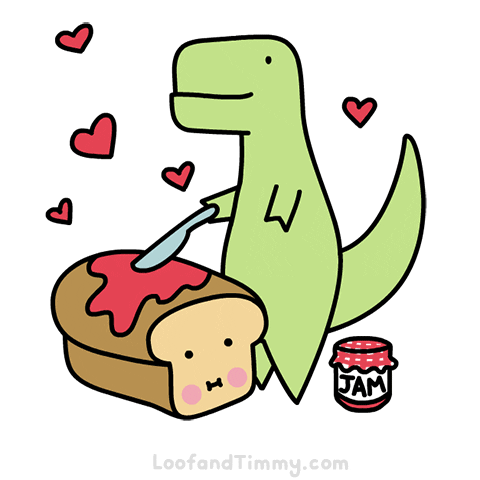

What's in a Jam?
A (Short) History of Humans Making Jam
Jam is One of the Oldest Foods in the World
The earliest humans preserved foods for storage. Storing fruits was especially key, so they could continue eating fruit and its nutrients during the colder months.
Though food historians are pretty sure that people made preserves much earlier, the earliest record of people making jam comes from 6000 B.C.E., from the present day Middle East. They documented themselves harvesting honey to preserve fruits such as figs, apricots, and quinces.

-
De Re Coquinaria ("On the Subject of Cooking" or "The Art of Cooking"), is the first known published cookbook. An amalgamation of foods from the Roman Empire, this cookbook contains recipes for fruit preserves, as well as advice for keeping fruits such as grapes, pomegranates, quinces, and mulberries by boiling them in a pot with honey and vinegar.
-
According to legend, Joan of Arc habitually ate quince jam before heading into battle. She believed it filled her with courage.
-
Nostradamus loved cherry jam so much he wrote an entire treatise on it. He was fully convinced that it was a love-potion that, if made properly, could woo any woman.
-
During his reign, The Sun King Louis XIV of France insisted that fruit jam (harvested from the gardens at Versailles) be served after every meal on special ornate silver dishes.
-
The first published cookbook in the United States, American Cookery by Amelia Simmons, includes recipes for preserves and marmalades for quinces, berries, peaches, pears, apricots, and plumbs.
-
The isolation and mass production of pectin, a fruit and vegetable fiber used for hundreds of years as a gelatin, made acquiring a quality pectin product easier. Alongside the lowering cost of sugar, pectin made jam-making less time-consuming and more accessible for Americans.
-
Jerome Smucker of Ohio opened the J. M. Smucker Company, which first sold apple butter before expanding to other types of fruit jams.The Welch Company in Concord, Massachussets released it's first jam product, Grapelade (grape + marmalade). The United States Army, fighting in WWI, purchased the entire initial inventory and shipped it to France.Food shortage anxieties during WWII led the British Women's Institute to secure funding for a large scale canning operation. An estimated 5,300 tons of fruit were preserved during the war.A sugar shortage in the West leads commercial jam producers to switch to high-fructose corn syrup. Corn syrup got a bad rap as an unhealthy food product, and people who wanted to avoid it turned back to making jams at home instead of buying it.